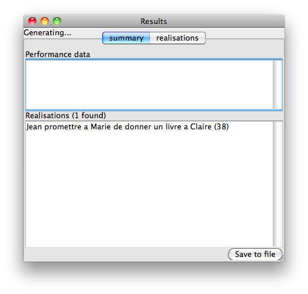
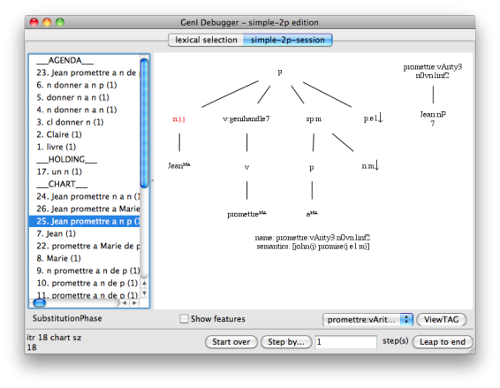
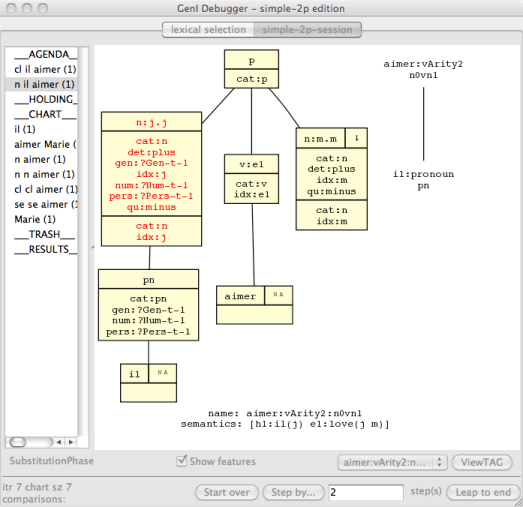

Input screen
When you first start GenI, you will see the input screen. It allows you to type in an input semantics (or to modify the one that was automatically loaded up), select some optimisations and run the realiser. You can also opt to run the debugger instead of the realiser.
Input screen
The configuration GUI aims to a provide a graphical substitute for the command line switches. Note you cannot yet select optimisations and test cases from this window; use the main window instead. Note also that changes to GenI tend to start from the command line switches and only percolate to the GUI when time permits. For full control of GenI, see geni --help.
Configuration
When surface realisation is complete, we display a results window with various tabs for intermediary results in lexical selection, derived trees, derivation trees and generation statistics.
Results window
The results window (above) shows all of the sentences found. Each sentence is annotated with its chart item number. You can inspect the derived and derivation tree for that result by selecting the realisations tab.
Instead of going directly to the results window, you could instead use the interactive debugger which GenI provides. The debugger shows a separate tab for each phase in surface realisation (lexical selection, filtering, building).
Debugging
The interactive debugger can have a diffrent GUI for each realisation algorithm. Here we will discuss the interface for the Simple 2-Phase algorithm which uses by default. The interfaces for other algorithms are likely to very similar.
Stepping through the debugger
The debugger allows you to step through chart generation. Using the ’Step by’ button, you can walk through an arbitrary number of steps, where each step consists in pulling one item of the agenda, combining it with the chart and putting some of the results back on to the agenda (or the trash, or results pile as the case may be). New chart items produced on each step typically have one of their nodes highlighted in red. This indicates that the node was the site of the most recent “event”. For example in the substitution phase, the red node indicates where the substitution operation was performed; whereas in the adjunction phase, it could either indicate where adjunction was performed or where a null-adjunction constraint was applied.
If you select the “show features” checkbox, all nodes in the chart item will be expanded to reveal the underlying feature structures. The components of this expanded representation are segmented into the following boxes:
Debugger features
Summary: here, n:j.m indicates that the category is n, that the top idx feature is associated with j and the bottom one with m.
Decorations: here, ↓ indicates that this is a TAG substitution node, following the usual conventions in the literature.
The top feature structure
The bottom feature structure